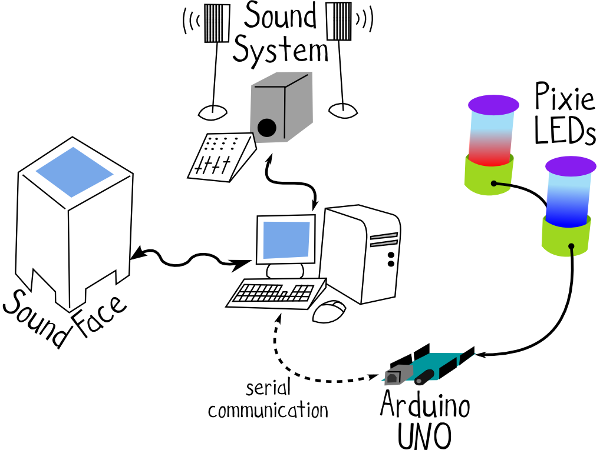
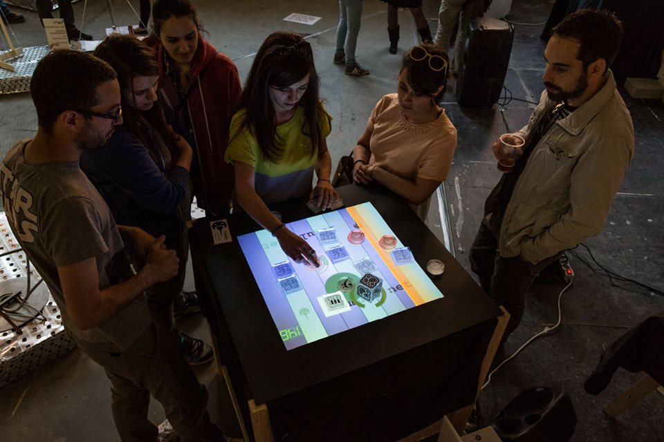

La stazione 1 presenta una particolarissima esperienza interattiva tattile, sonora e visiva. Tutta la stazione è costruita attorno a SoundFace, una superificie interattiva musicale che limulo.net ha realizzato ispirandosi al progetto reacTIVision e ai lavori dell’università Pompeu Fabra di Barcellona.
In breve: posizionando sulla superificie alcuni particolari oggetti chiamati fiducials, l’utente è in grado di eseguire in tempo reale una performance musicale ricevendo in più un feedback visivo dalla superficie stessa.

Per l’occasione abbiamo anche preparato uno sketch, in esecuzione su di una scheda Arduino UNO, che invia segnali ad una catena di due LED Pixie ad alta luminosità. Le luci dei 2 Pixie si accendo a tempo con la musica e cambiano colore in relazione allo strumento musicale attivo, aggiungendo un’ulteriore dimensione all’esperienza SoundFace. Ancora più coinvolgente!